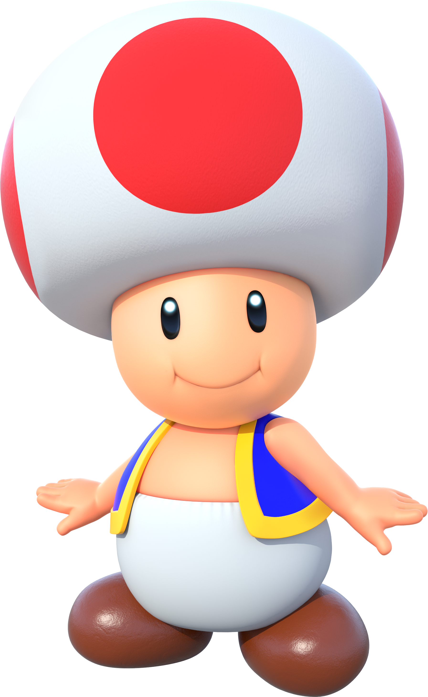

Toad

- Toad é um cogumelo humanóide, um antigo protetor do Reino dos Cogumelos e da princesa Peach e um amigo leal e alegre para grande parte do elenco
- Foi apresentado oficialmente como personagem do Mario em Super Mario Bros. 2
- Seu papel muda de participante das aventuras de Mario para ajudante
- Isso porque, igual ao Yoshi, Toad é um indivíduo dentro de uma espécie inteira de criaturas com o mesmo nome
- Toad participa das aventuras de resgate da série Mario Bros., das festas da série Mario Party, dos eventos esportivos como participante de corridas e torneios assim como os outros personagens principais
- Toad também é ajudante com as suas tarefas de guiar os jogadores nas festas de Mario Party e mecânico e repórter esportivo das séries esportivas do Mario
- Também possui sua própria aventura, a série Captain Toad: Treasure Tracker, em que o capitão Toad é um explorador nato que busca e procura por tesouros raros, principalmente por Estrelas
Página Anterior